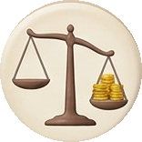
pays (is liable)does not pay (is exempt)Mishnah 1: A jug in the public domain
Someone who breaks an object left in the public domain is exempt, but if he is hurt, the owner pays. The owner of a jug that breaks there pays for what it causes.
A jug left in the public domain
- A man left a jug in the public domain and another came and stumbled over it and broke it: he is exempt.
- If he was injured by it, the owner of the jug is liable for his injury.
- A person does not have the right to leave his objects in the public domain.
A jug that breaks in the public domain
- If a man's jug broke in the public domain, and another slipped on the water or was hurt by the potsherds, he is liable.
- Rabbi Judah: if he broke it with intention he is liable; if without intention he is not.
- Rabbi Judah teaches a new principle, intention: if a person accidentally put a damaging object into the public domain he is not liable for later damage.
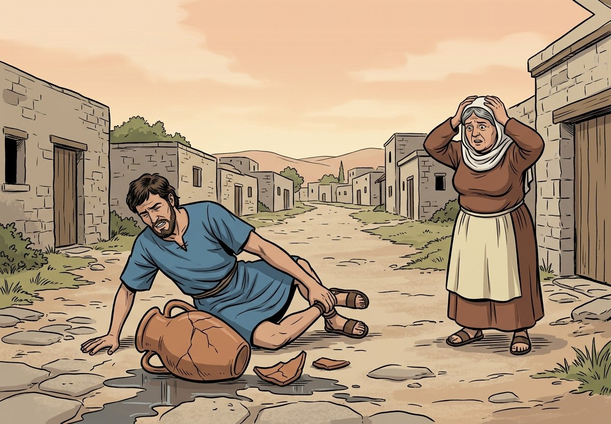
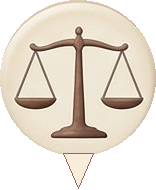
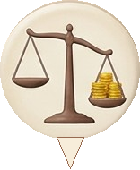
12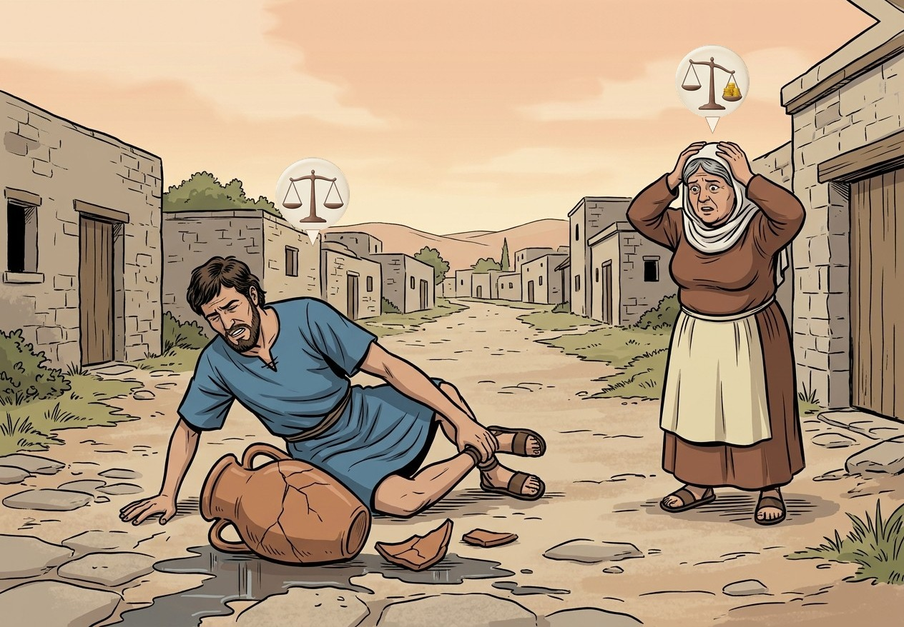
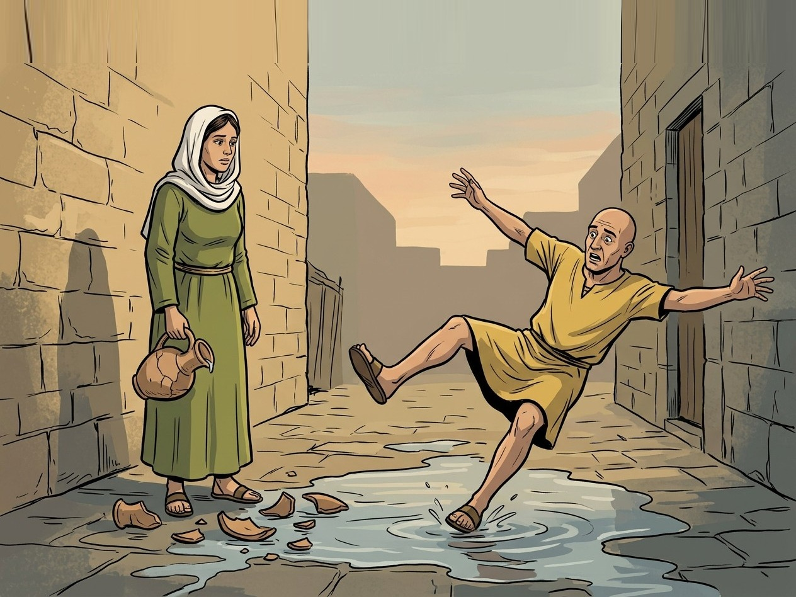
?R. Kulp's commentary
In the first section of mishnah one we learn that a person does not have the right to leave his objects in the public domain. Therefore if he should do so and another should come along and break the object, the person who broke it is exempt and if he should be injured the owner is liable.
If a man’s jug broke in the public domain, and another slipped on the water, or was hurt by the potsherds, he is liable. Rabbi Judah says: “If he [broke the jug] with intention, he is liable, But if he broke it without intention he is not liable.” In section 2 Rabbi Judah teaches us a new principle, that of intention. If a person accidentally put a damaging object into the public domain he is not liable for subsequent damages. One is only liable if he put the damaging object into the public domain on purpose.
Mishnah 2: Water, thorns and glass
Someone who pours water into the public domain, hides thorns or glass there, or lets a thorn fence fall into it, pays for the injury.
What he is liable for
- If a man poured out water in the public domain and another was injured, he is liable for his injury.
- If he hid thorns or glass, or made his fence of thorns, or his fence fell into the public domain and others were injured, he is obligated for their injury.
Why
- Even if he tried to keep harmful materials out of people's way, he is responsible for the damage they do.
- The sages considered the public domain to belong to everyone, so no one may put dangerous material there.
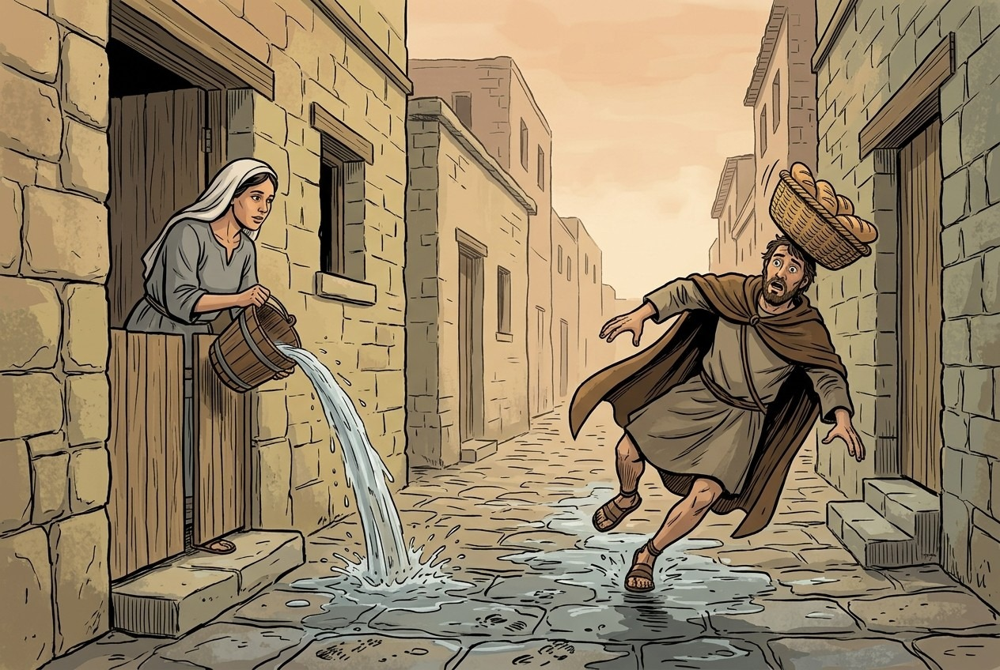
?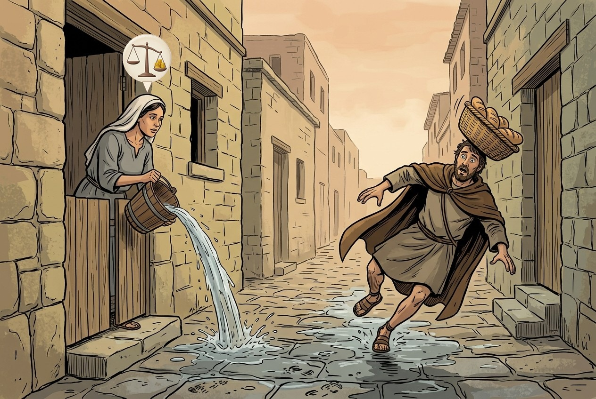
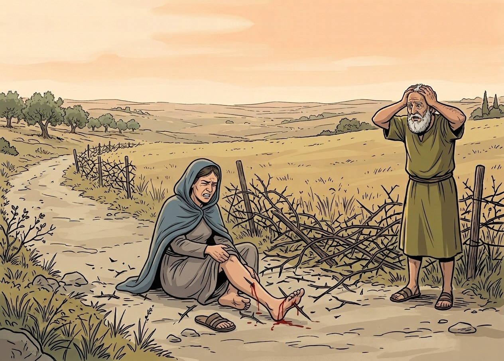
?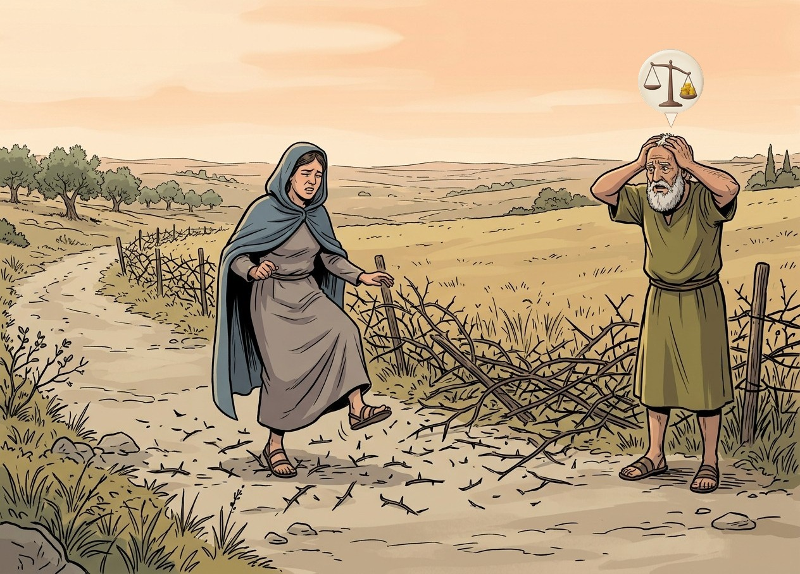
R. Kulp's commentary
In section 2 we learn that even though he may have tried to keep them out of people’s way, if they are harmful materials he is responsible for subsequent damages. One might want to consider the implications these mishnayot have on modern ecological problems. The sages considered the public domain to belong to everyone and as such no one was allowed to place there potentially dangerous material.
Questions for Further Thought: • What is the difference between the cases in clause 2 of the first mishnah and clause 1 of the second mishnah? • Rabbi Judah distinguishes between deliberate and inadvertent breaking of the jug. Evidently the sage(s) who taught the clause preceding Rabbi Judah did not make such a distinction. According to them one would be obligated even if the jug broke accidentally. What is the logic behind this opinion? • The first clause of mishnah one says that when one stumbles on a jug left in the public domain he is not obligated. What might the law be if he broke it with intent? Would he still be exempt or would he be obligated?
Mishnah 3: Straw and dung in the public domain
What a person puts out in the public domain and does damage with, anyone may take, and he still pays for the injury.
Straw and stubble
- A man put out his chopped straw and stubble in the public domain to make fertilizer and another was injured: he is liable for the injury, and whoever comes first may take possession of them.
- A double consequence: anyone may take the straw, so it is not really his any more, yet he still pays for the injuries.
- Rabban Shimon ben Gamaliel: whoever leaves disruptive things in the public domain and they cause damage must make restitution, and whoever comes first may take possession of them. (Kulp asks whether this really disagrees with the first view.)
Cattle dung
- If a man turned over a piece of cattle dung in the public domain and another was injured, he is liable.
- The dung had no owner; by turning it over he took possession of it, so he must make sure it does not injure anyone.
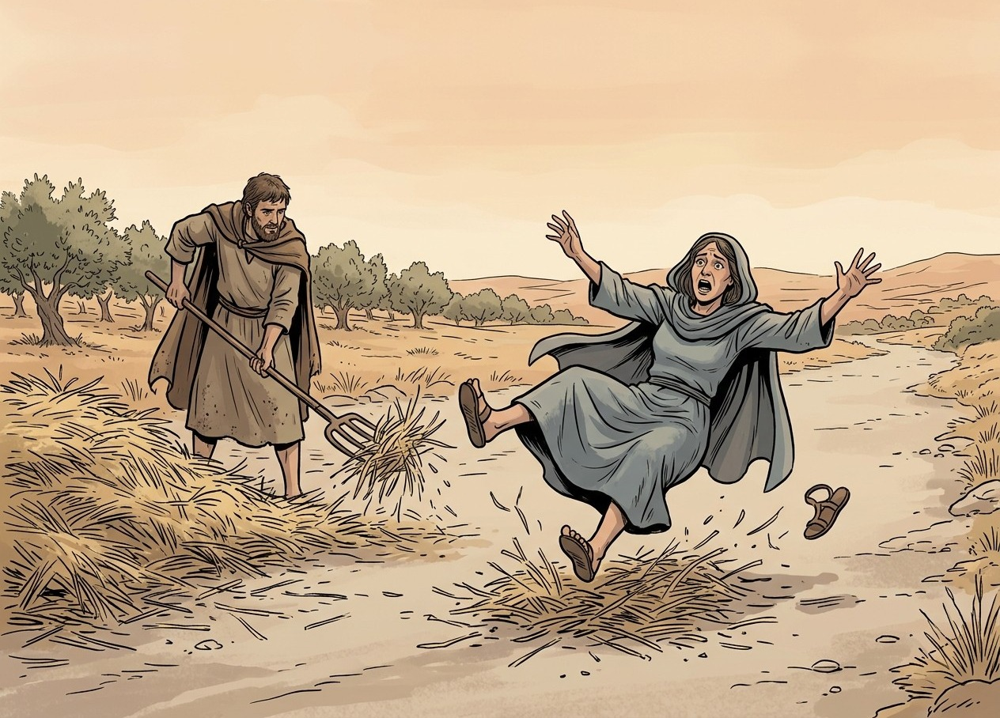
?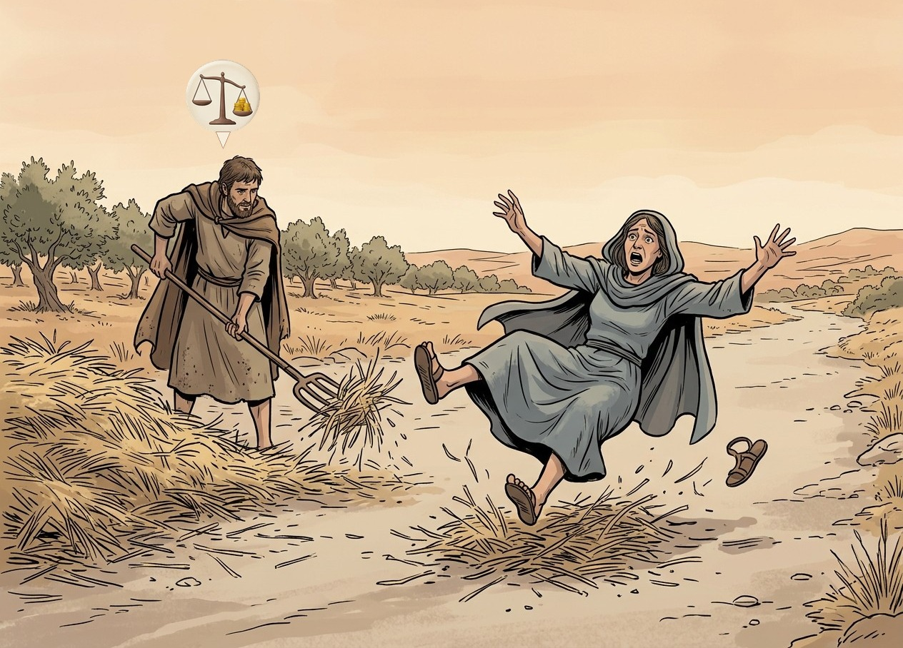
R. Kulp's commentary
In mishnah three a person put out straw and stubble in order to make fertilizer for his field. The mishnah states that this is an illegal action, the consequences of which are liability for damages done to others and loss of property. Note the double punishment: 1) anyone can claim the straw and stubble, meaning they are not really his anymore; 2) nevertheless if someone is injured by them, we make the owner, who is not really the owner anymore, pay for the injuries. Evidently the mishnah sees bringing the straw and stubble out to the public domain as a grave offense.
If a man turned over a piece of cattle dung in the public domain and another was injured thereby, he is liable for injury. Section two deals with a situation where a person saw an ownerless piece of dung in the public domain. (Believe it or not, people wanted to own this dung for fertilizing.) By turning it over, he has taken possession of the dung. Therefore if someone else is injured by it, he is obligated. The mishnah teaches that once you technically own something, you now have to make sure it doesn’t injure someone else. Mishnah four teaches us the principle that accidentally stumbling is not an excuse for causing damages. Although the person who tripped certainly did not intend to do so, and probably caused damage to the things he himself was carrying (pots), he is still liable. He should have walked more carefully.
Questions for Further Thought: • What is the difference between Rabban Shimon ben Gamaliel’s opinion and the statement that immediately preceded him? Is there even a disagreement in this mishnah?
Mishnah 4: Two pot-sellers
If one pot-seller stumbles and the one behind falls on him, the first pays for the injury he caused.
The case
- Two pot-sellers were walking one behind the other, the first stumbled and fell, and the second fell on the first: the first is liable for the injury to the second.
- Accidentally stumbling is not an excuse for causing damage; he should have walked more carefully.
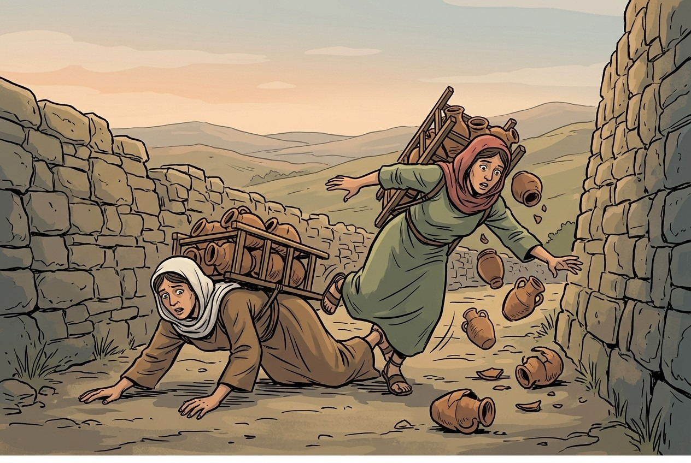
?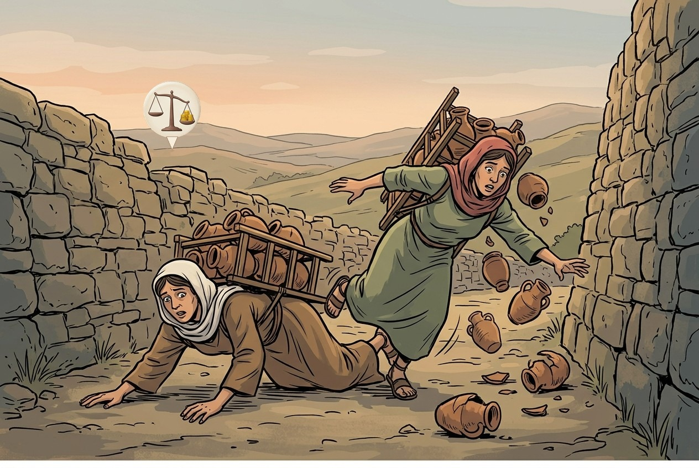
R. Kulp's commentary
Questions for Further Thought: • Mishnah four uses the example of pot-sellers. Why use this example? What piece of information might the mishnah be teaching by using this example and not, for instance regular pedestrians? • What are some modern day situations that are similar to these mentioned in the mishnah? How does modern law differ? How is it the same?To sign up for the Mishnah Yomit project visit www.mishnahyomit.org or www.uscj.org.To receive hard copies of Mishnah Yomit please write to Dr. Morton Siegel, United Synagogue of Conservative Judaism, 155 Fifth Avenue, New York, NY 10010
Mishnah 5: A jar and a beam
In the public domain each has the right to walk. Who pays when the beam breaks the jar depends on who was in front, and on a sudden stop or a warning.
Side by side
- One comes carrying a jar and another a beam, and the jar is broken by the beam: the owner of the beam is exempt, since each has the right to walk along.
- Note: R. Kulp's explanation says the owner of the beam is liable here. That contradicts the mishnah text; the author checked, and Kehati confirms the mishnah: he is exempt.
The beam in front
- The owner of the beam came first and the owner of the jar came after, and the jar was broken by the beam: the owner of the beam is exempt. If he stopped suddenly, he is liable. If he said "Stop" to the owner of the jar, he is exempt.
- If the jar owner walks into him it is his own fault. A sudden stop without a warning is something the beam owner should have foreseen; a warning clears him.
The jar in front
- The owner of the jar came first and the owner of the beam came after: the owner of the beam is liable. If the owner of the jar stopped suddenly, the owner of the beam is exempt. If the owner of the jar said "Stop" to the owner of the beam, the owner of the beam is liable.
- So too one who comes with his candle and one with his flax.
What it teaches
- Individual rights in the public domain can conflict; from the examples we can draw general principles about the rights people have there.
Is the owner of the beam liable?
| The situation | The owner of the beam |
|---|---|
| They walk side by side | exempt |
| Beam in front, jar owner walks into it | exempt |
| Beam in front, the beam owner stopped suddenly | liable |
| Beam in front, the beam owner said "Stop" | exempt |
| Jar in front, the beam owner walks into it | liable |
| Jar in front, the jar owner stopped suddenly | exempt |
| Jar in front, the jar owner said "Stop" | liable |
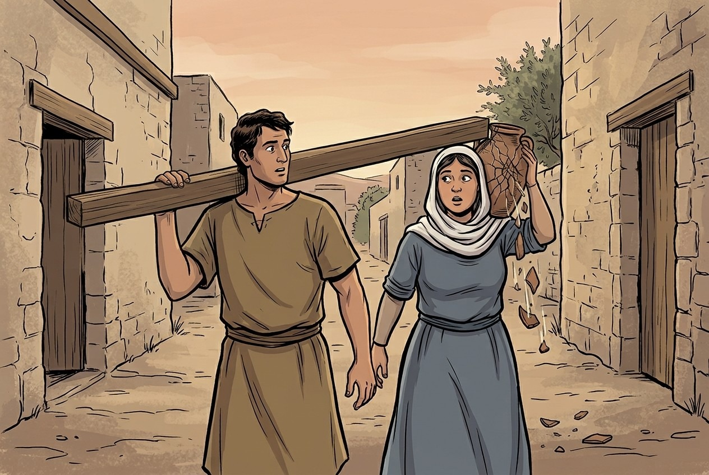
?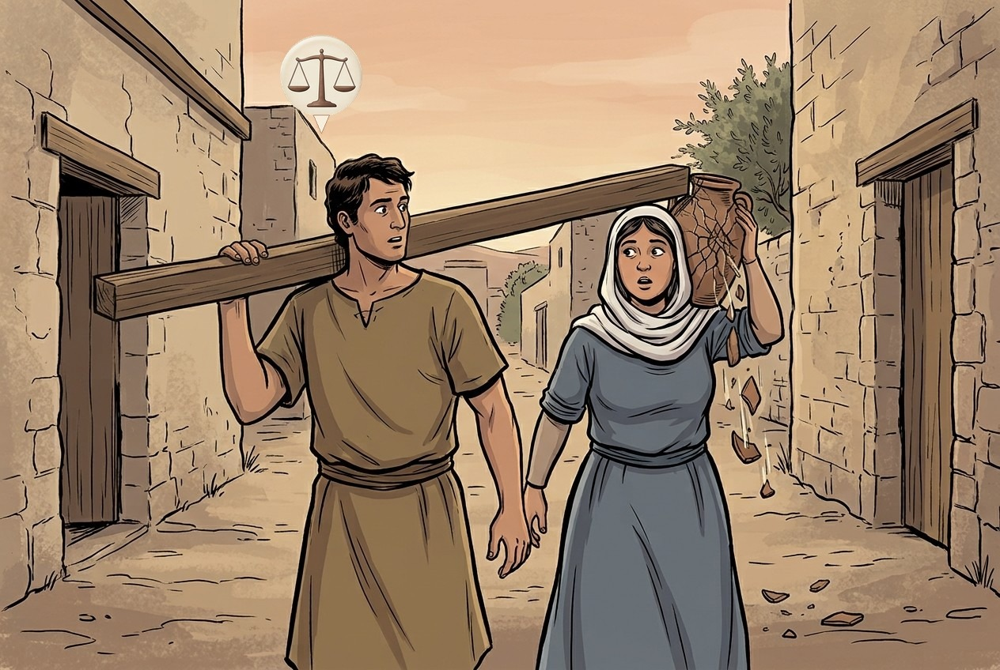
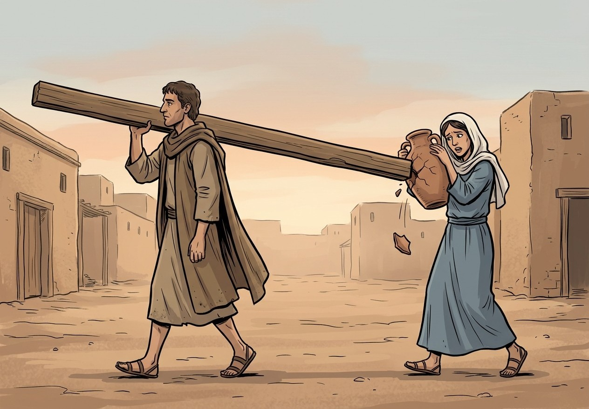
?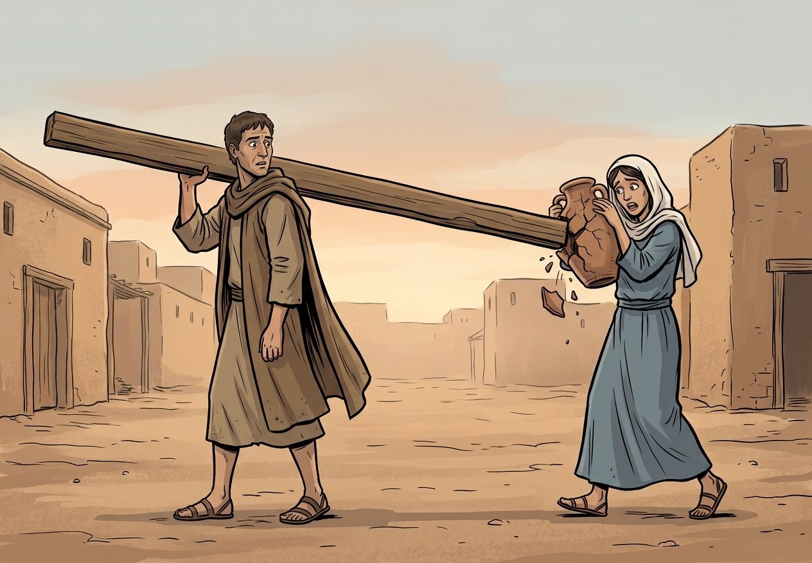
?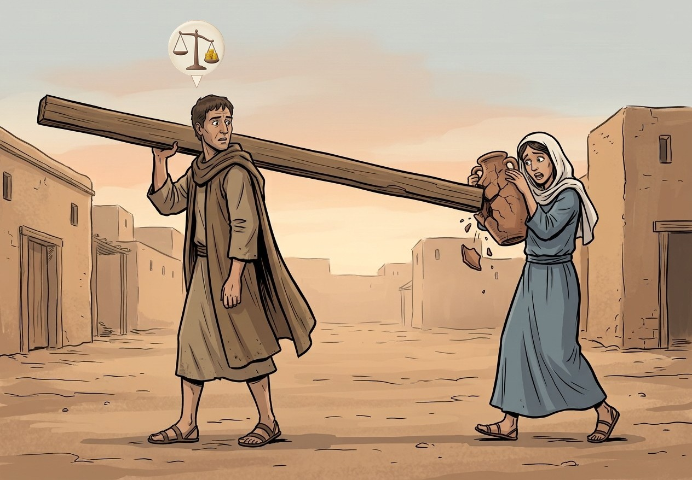
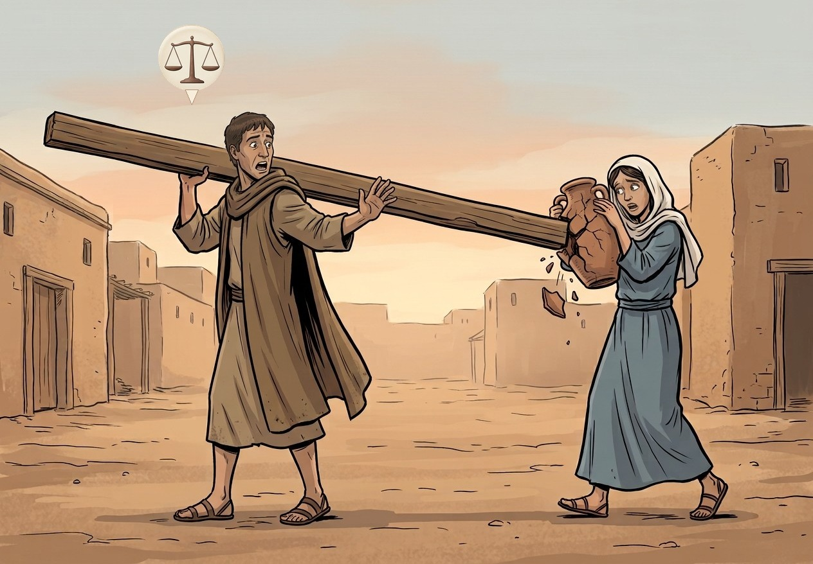
Mishnah 6: Running and walking
Two people in the public domain, one running and one walking or both running, who injure each other: neither is liable.
The case
- Two were walking in the public domain, one running and the other walking, or both running, and they injured one another: neither is liable.
- People have the right to walk in the public domain, and the right to run. Running is not in itself careless, so it carries no extra liability.
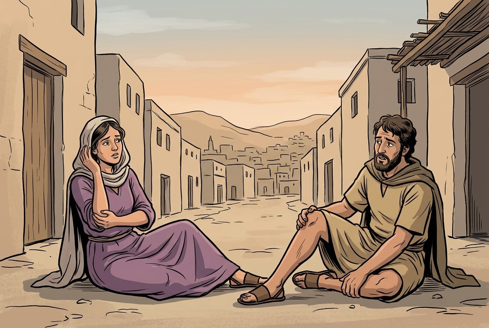
12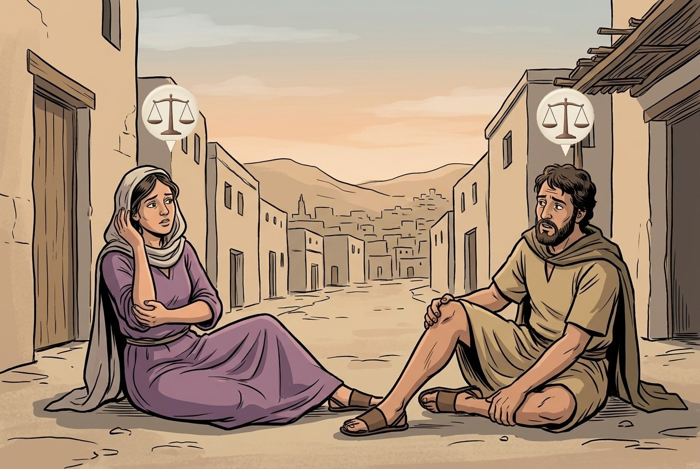
R. Kulp's commentary
[If] two were walking along in the public domain, the one running and the other walking, or both running and they injured one another, neither is liable. Mishnah six teaches again that people have the right to walk in the public domain and if someone bumps into them, they will not be liable for damages, unless they should have seen the person, as we learned yesterday. The new element in this mishnah is running. One might have thought that running in the public domain is by its nature dangerous, and therefore anyone who does so will be liable for any damages he/she causes. The mishnah says no, a person has the right to run in the public domain. Running in and of itself is not a criminally negligent activity and therefore does not carry with it an added degree of liability.
Questions for Further Thought: • Yesterday I suggested to analogize the mishnah’s descriptions of accidents in the public domain to traffic accidents in our society. What might be a modern equivalent to running? Try to think of something that is inherently more dangerous but still legal and does not carry with it any extra liability. Is there such a thing?
Mishnah 7: Splitting wood
Someone who splits wood and hurts anyone is liable, whichever domain he and the injured person are in.
The case
- A man was splitting wood in a private domain and injured anyone in the public domain, or was in the public domain and injured anyone in a private domain, or was in a private domain and injured anyone in another private domain: he is liable.
- A person has the right to work in a profession of his choice, but the profession may not cause damage to other people; wherever he chops and wherever the damage is, he is liable.
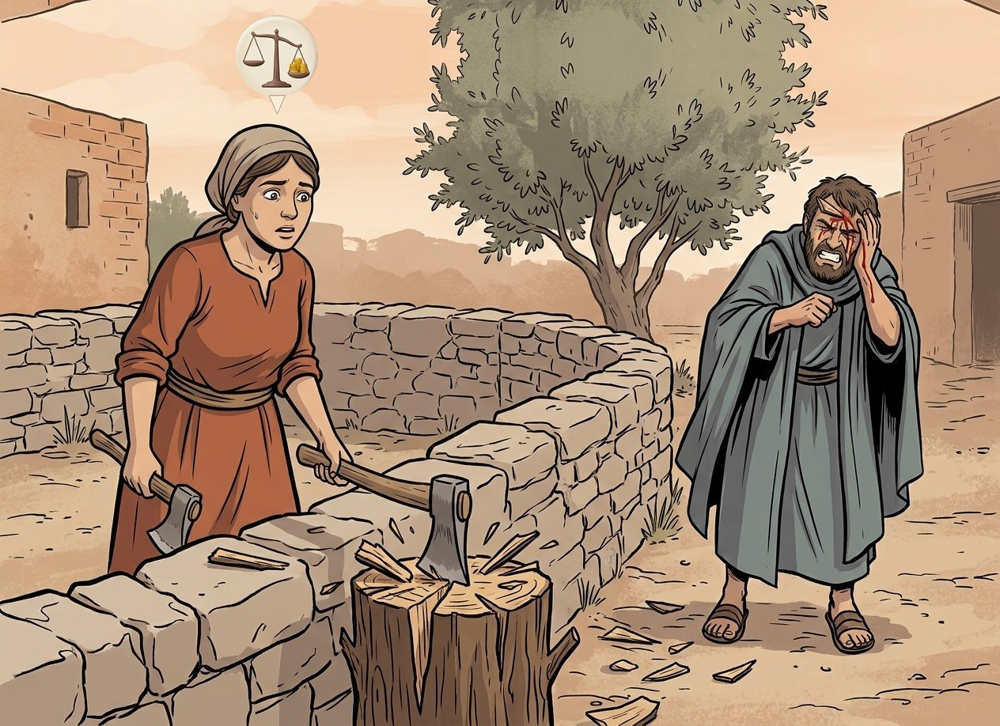
R. Kulp's commentary
Questions for Further Thought: • Based on mishnah seven, would you think a person would be liable if while chopping wood on his own property he damages someone who has entered his property?
Mishnah 8: When two oxen or two people hurt each other
The payment is for the greater hurt. Harmless oxen pay half damages, oxen that are attested dangers and people pay full damages.
The cases in the mishnah
- Two harmless oxen hurt one another: the owner pays half damages for the one that suffered the greater hurt.
- If both were attested dangers: full damages for the one that suffered the greater hurt.
- One harmless and one attested danger: the attested danger pays full damages for the greater hurt the other suffered; the harmless one pays half damages for the greater hurt the other suffered.
- Two men who hurt one another: full damages for the one who suffered the greater hurt.
- A man and a harmless ox: the man pays full damages; the ox's owner pays half damages.
- Rabbi Akiva: even if a harmless ox hurt a man, full damages are paid for the one who suffered the greater hurt.
Background
- An attested danger (muad) has been testified against: its owner pays full damages from the best of his land. A harmless ox (tam) costs its owner half damages, from the value of the ox itself, so he never pays more than that ox is worth.
- A human being is always an attested danger.
Who pays for the greater hurt
| Who hurt each other | The payment |
|---|---|
| Two harmless oxen | half damages |
| Two attested dangers | full damages |
| One attested danger, one harmless | the dangerous one pays full damages; the harmless one half |
| Two men | full damages |
| A man and a harmless ox | the man pays full damages; the ox's owner half (R. Akiva: full) |
Mishnah 9: Selling the live ox and dividing
The Torah says to sell the live ox and divide the price. The mishnah shows how this works out when the two oxen are worth different amounts.
The verse
- Exodus 21:35: when a man's ox gores his neighbour's ox and it dies, they shall sell the live ox and divide its price, and they shall also divide the dead animal. This is the payment system for a harmless ox.
The cases
- An ox worth 100 gored an ox worth 200 and the carcass is worth nothing: the owner of the gored ox takes the live ox.
- An ox worth 200 gored an ox worth 200 and the carcass is worth nothing: Rabbi Meir would apply the verse by selling the live ox and dividing its price.
- Rabbi Judah: that is the halakhah, but it fulfils only half the verse. If an ox worth 200 gored an ox worth 200 and the carcass is worth 50, each takes half of the live ox and half of the dead ox.
- With carcass 50 they sell both and split 200 and 50: each is left with 125, 75 less than he started with, which is half of the damages of 150.
R. Kulp's commentary
If an ox worth 100 gored an ox worth 200, and the carcass is not worth anything, [the owner of the gored ox] takes the [live] ox. Section 1 describes a case where an ox worth 100 gored an ox worth 200. The owner of the goring ox owes 100, which are half damages. Since the carcass is not worth anything, the owner of the dead ox can just take the live ox as payment. This case is significantly different than the case described in Exodus. There the two owners sold both the live ox and the carcass and split the proceeds evenly. In this case there is no need for any selling or splitting of proceeds.
If an ox worth 200 gored an ox worth 200 and the carcass is not worth anything, Rabbi Meir said, “If thus it was written, ‘they shall sell the live ox and divide its price, they shall also divide the dead animal’. Section 2, which contains Rabbi Meir’s opinion brings up a case closer to the one described in Exodus. Here the goring ox and the gored ox are both worth 200, but the carcass is not worth anything. The owner of the goring ox owes 100 and therefore the two owners sell the goring ox and split the proceeds.
Rabbi Judah said to him: “Such indeed is the halachah (, but you have fulfilled the verse ‘they shall sell the live ox and divide its price’, and you have not fulfilled the verse ‘they shall also divide the dead animal’. What case is this? If an ox worth 200 gored an ox worth 200 and the corpse is worth 50, this one takes half of the live ox and half of the dead ox, and this one takes half of the live ox and half of the dead ox. In section 3 Rabbi Judah points out that Rabbi Meir’s scenario only fulfills half of the description of the case in Exodus, that is selling the live animal. Rabbi Meir’s scenario does not include the need to sell the carcass, which is mentioned in Exodus. Therefore Rabbi Judah explains that Exodus describes the scenario as we explained in the introduction, where both oxen are worth 200 before the goring and the carcass is worth 50. They sell both the live and dead oxen and split the proceeds, leaving both parties with 125, 75 less than the amount with which they started. Since full damages were 150, 75 is equal to half damages.
Questions for Further Thought: • As I pointed out in the introduction, the Torah is only dealing with a circumstance in which both oxen were of equal value. Why do you think the Torah only describes this circumstance? • Following up the first question, the Torah teaches the principle of half damages. Why do you think that it doesn’t just say that the injuring party pays half damages and instead it describes the process of selling both the live and dead animals? To whose advantage is this system?
Mishnah 10: What the person owes and what the ox's owner owes
The same injury can create an obligation for the owner of the ox but not for the person who did it himself, and the reverse.
Five pairs
- Embarrassment: his ox caused it, he is exempt; he caused it himself, he is obligated.
- A slave's eye or tooth: his ox put it out, he is exempt from freeing the slave; he did it himself, he must free him.
- His father or mother: his ox injured them, he is obligated; he injured them himself, he is exempt.
- A heap of produce on Shabbat: his ox lit it, he is obligated; he lit it himself, he is exempt, because he is liable for his life.
Why
- An ox does not know that it might embarrass someone, so its owner does not pay the embarrassment payment.
- Freeing a slave applies only when the owner himself does the act (Exodus 21:26-27); nor does he owe money, since the slave is his property.
- One who strikes a parent faces the death penalty; a person liable for death and for money receives only the death penalty. Lighting a fire on Shabbat is likewise a capital crime.
- The mishnah is formulaic so that it can be memorised: it is oral Torah.
If his ox did it, and if he did it himself
| The act | If his ox did it | If he did it himself |
|---|---|---|
| Embarrassment | exempt | obligated |
| A slave's eye or tooth | exempt from freeing him | must free him |
| Injury to his father or mother | obligated | exempt |
| A heap of produce lit on Shabbat | obligated | exempt (liable for his life) |
Mishnah 11: Who has to prove it?
The one who wants payment must bring the proof. If he cannot, the other is exempt.
One ox pursuing another
- If an ox was pursuing another ox and it was injured, and one says your ox caused it and the other says a rock did: on the one who wishes to exact compensation lies the burden of proof.
- Without proof he cannot collect.
Two oxen pursuing a third
- Two oxen were pursuing a third and each owner says the other's ox did it: both are exempt. If both were owned by one man, both are obligated.
- It is clear that one of them caused it but not which, so the owner of the injured ox cannot collect from either; the one owner is liable.
Big and small, harmless and dangerous
- If one was big and one small, or one harmless and one an attested danger, and the owners dispute which caused the injury: on the one who wishes to exact compensation lies the burden of proof.
- The claimant gains by a larger or more dangerous ox having done it: a harmless ox pays no more than its own value, and an attested danger pays full damages.
Two injured, two injuring
- The same rule applies when two oxen were injured by two oxen: the burden of proof is on the plaintiff.
The principle
- The final mishnah teaches an important principle: the burden of proof is on the one who wishes to exact compensation; without positive proof the defendant is found exempt.
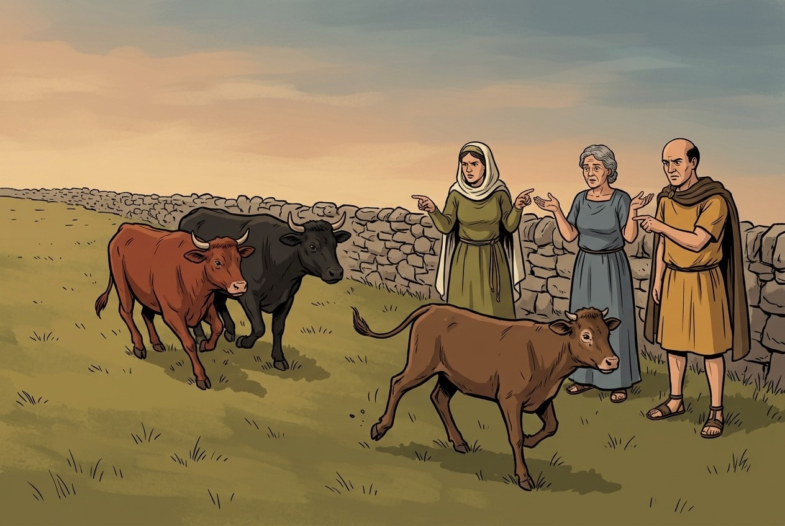
12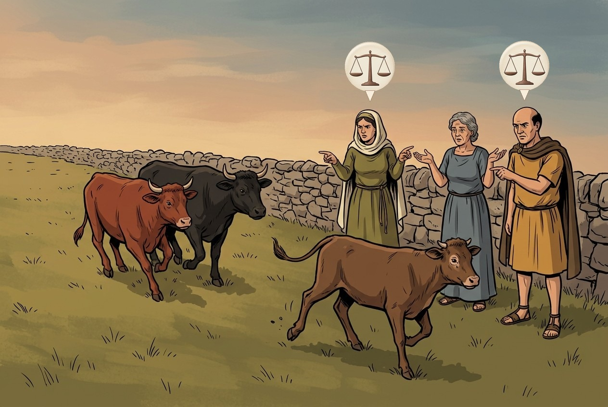
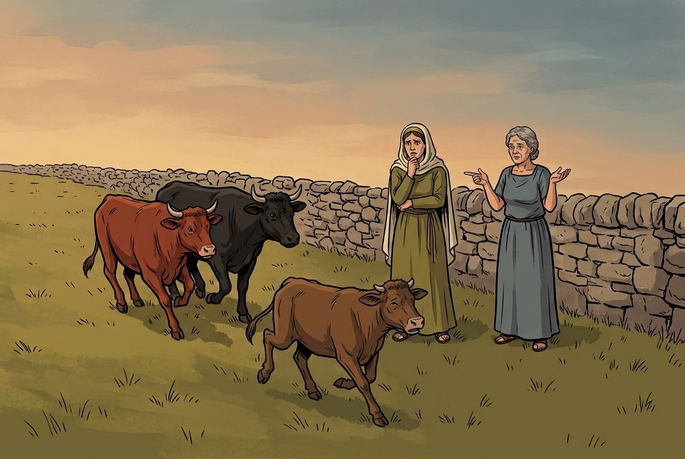
?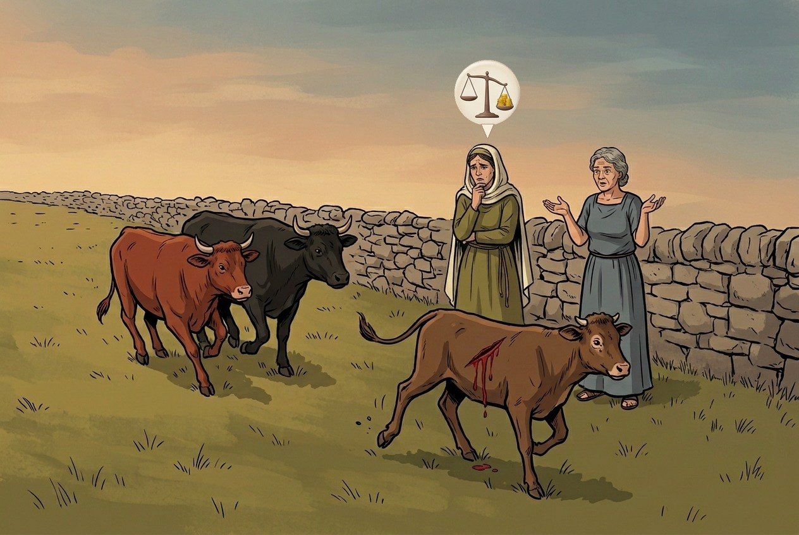
Chapter summary
Draft from the mishnah and R. Kulp's commentary only (each item carries its mishnah number). Kehati outranks R. Kulp and has not been read yet. Definitions are provisional until AnyDaf's master glossary covers them.
Key principles
- The public domain belongs to everyone: no one may leave objects or dangerous materials there. If someone breaks an object left there he is exempt, but if he is hurt, the owner pays for the injury. 3:1
- Pouring water, hiding thorns or glass, or letting a thorn fence fall into the public domain makes one liable for the injury, even if he tried to keep it out of people's way. 3:2
- What a person puts out in the public domain and damages with, anyone who comes first may take, yet he still pays for the injury it causes. Whoever takes possession of something (turning over dung) must see that it injures no one. 3:3
- Stumbling by accident is no excuse: the one who stumbles pays for the injury he causes. 3:4
- Everyone has the right to walk, and the right to run, in the public domain. Collisions where both have that right carry no liability; who pays depends on who was in front, a sudden stop, or a warning. 3:53:6
- A livelihood may not damage others: one who splits wood is liable for any injury he causes, whichever domain either is in. 3:7
- When two oxen or people hurt each other, the payment is for the greater hurt: half damages for a harmless ox, full damages for an attested danger or a person. 3:8
- The same injury can bind the owner of the ox but not the person, and the reverse (embarrassment, a slave's eye, parents, fire on Shabbat). A person liable for death and money gets only the death penalty. 3:10
- The burden of proof is on the one who wants payment. Without positive proof the defendant is exempt; two oxen with one owner make that owner liable. 3:11
Key terms
- public domain רשות הרבים 3:13:2
- The street and other common ground. The sages considered it to belong to everyone, so no one may place dangerous things in it.
- harmless ox (tam) תם 3:8
- An ox accounted innocent, not previously testified against. Its owner pays half damages, from the value of the ox itself, so he never pays more than the ox is worth.
- attested danger (muad) מועד 3:8
- An ox that has been testified against. Its owner pays full damages from the best of his land. A human being is always an attested danger.
- half damages, full damages חצי נזק, נזק שלם 3:8
- The payment for the harm done: half for a harmless animal, the whole for an attested danger or a person.
- burden of proof 3:11
- The duty of the one who wants payment to bring positive proof. Without it the defendant is found exempt.
Key debates
Does intention matter for a jug that breaks in the public domain? 3:1
The first view: he is liable for the injury, with no distinction (Kulp: evidently they hold he is obligated even if it broke accidentally).
Rabbi Judah: only if he broke it with intention; without intention he is not liable.
Does Rabban Shimon ben Gamaliel disagree with the first view? 3:3
The first view: the one who put out the straw is liable for injuries, and whoever comes first may take it.
Rabban Shimon ben Gamaliel: whoever leaves disruptive things in the public domain must make restitution if they cause damage, and whoever comes first may take them. Kulp asks whether there is a disagreement at all.
What does a harmless ox owe for hurting a man? 3:8
The first view: the ox's owner pays only half damages.
Rabbi Akiva: even a harmless ox that hurt a man pays full damages for the greater hurt.
How is Exodus 21:35 applied? 3:9
Rabbi Meir: with two oxen worth 200 and a worthless carcass, sell the live ox and divide its price.
Rabbi Judah: that is the halakhah, but it fulfils only half the verse. The verse speaks of selling the live ox and also dividing the dead animal, as when the carcass is worth 50.